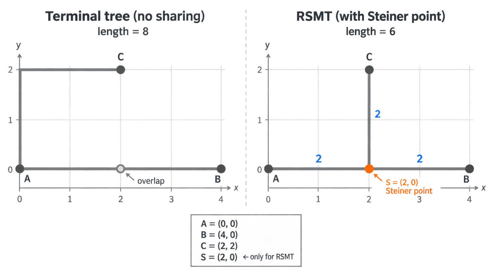
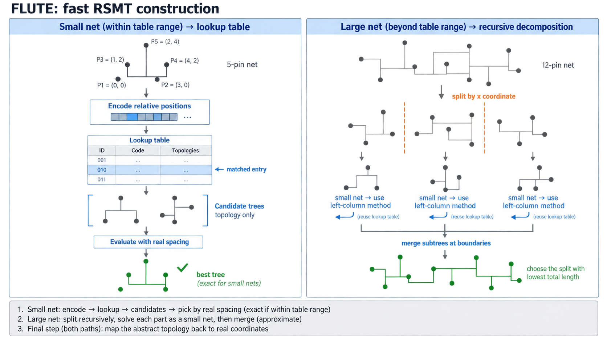
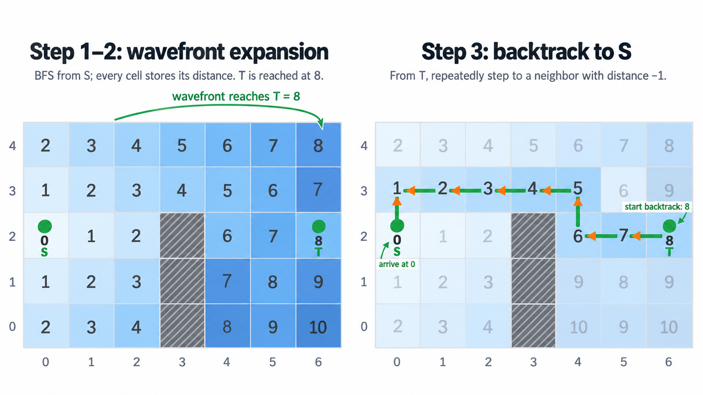
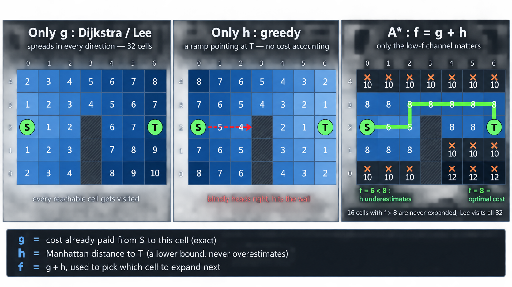
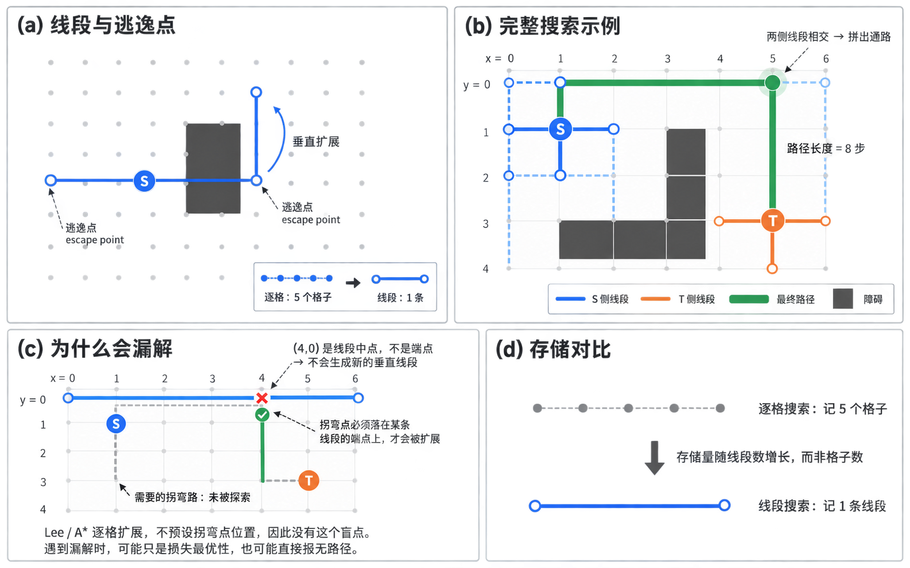

布线算法调研#
0. 布线任务概述#
布线通常分为两个阶段：全局布线先规划整体路线，详细布线再落实具体金属线和过孔。
打个比方：全局布线像「先确定走哪些街区」——把芯片划成粗网格，规划每条网大致经过哪几片区域、上哪几层，主要看整体拥不拥塞。详细布线像「再确定走哪条车道、在哪里转弯」——把粗路线落到具体的轨道、金属线和过孔上，还得满足一系列制造规则。
如果详细布线发现某处实在走不通，就把问题反馈给上游，调整路线后再布。
0.1 全局布线：规划整体路线#
全局布线把芯片划成较粗的网格，规划每条网经过哪些区域、使用哪些金属层，并协调各条网对布线资源的使用。它主要关注整体是否拥塞，以及线长、时序等指标，而不确定每根金属线的精确位置。
| 任务 | 对应的经典算法或方法 |
|---|---|
| 为一条多引脚的网设计分叉连接结构 | 矩形斯坦纳树（RSMT）、FLUTE |
| 为各段连线寻找粗粒度路径 | Pattern routing、Lee 迷宫、Hightower 线搜索、A*、Dijkstra |
| 协调不同网的资源使用，缓解拥塞 | 协商式拥塞、PathFinder 思想、拆线重布（rip-up and reroute） |
| 将路径安排到不同金属层，兼顾过孔和容量 | 层分配（Layer Assignment），常用动态规划等方法 |
**输出：**粗粒度路径、金属层信息和布线引导区域（route guide），供详细布线使用。
需要留意的是，A*、Dijkstra 这类路径搜索算法在两个阶段都会用到，区别在搜索的粒度：全局布线在 G-cell 网格上寻找粗粒度路径，详细布线在具体轨道上寻找精确几何。
0.2 详细布线：落实具体连线#
详细布线根据全局规划，确定金属线具体走哪条轨道、在哪放置过孔，以及如何接到单元引脚。除了完成连接，还要满足线宽、间距、过孔等制造规则，并尽量控制线长、过孔数量和时序代价。
| 任务 | 对应的算法或方法 |
|---|---|
| 找到合法的引脚接入位置和接入方式 | 引脚可达性分析（Pin Access）、接入方案选择 |
| 为线段安排具体轨道 | 轨道分配（Track Assignment），可采用整数规划、网络流等方法 |
| 搜索具体的金属线路径 | A*、Dijkstra、迷宫搜索及其变体 |
| 发现并消除设计规则违例 | 设计规则检查（DRC）、搜索与修复（Search and Repair）、拆线重布 |
**输出：**具体金属线和过孔的几何形状与位置，供后续寄生参数提取、物理验证和签核使用。
1. 全局布线：从基本算法到现代路由器#
1.1 多端连接：一条网怎样连成树#
一条网往往不止两个引脚。这里要解决的问题，和两点路径搜索不同：
- 两点布线：已知起点和终点，寻找一条连接它们的路径；
- RSMT：已知多个引脚，先决定整条网应该怎样分叉、哪些线路可以共享。
多端连接要回答的，就是"这条网该连成什么形状"。它分成三层：先弄清楚 RSMT 这个问题的定义，再确认它要决定哪些东西，最后看经典的快速构造算法 FLUTE 怎么做。
1.1.1 RSMT 是什么#
RSMT 的全称是 Rectilinear Steiner Minimal Tree，即直角斯坦纳最小树。这个名称包含三个关键词：
- Rectilinear（直角）：边只能水平或垂直延伸，不能直接走斜线；
- Steiner（斯坦纳）：允许在原有引脚之外增加额外的分叉点，即 Steiner point；
- Minimal Tree（最小树）：连接全部引脚，并尽量缩短整棵树的总线长。
用一个例子理解。 假设一条网有三个引脚 A、B、C，坐标分别为：
A = (0, 0)
B = (4, 0)
C = (2, 2)
下面左右两张图用的是同一组引脚：左图是"不共享"的连接方式，右图是引入分叉点后的连接方式。

左图：不共享。 把 C 单独接到 A，再把 A 接到 B。两条路径分别是 A→C 和 A→B，各自按直角距离计长：
A-B = 4
A-C = |2-0| + |2-0| = 4
合计 = 4 + 4 = 8
其中 A 到 (2, 0) 这一段被两条路径重复经过，图中标为 overlap。注意这里是把两条路径各自的长度直接相加，重复段被算了两次；实际物理线长要合并重叠线段后才算得准。
右图：引入 Steiner 点。 在 A、B 之间的公共干线上增加一个分叉点 S = (2, 0)。S 不是电路中的真实引脚，只是为了让线路分叉而增加的 Steiner point。此时三段线分别为：
A-S = 2
S-B = 2
S-C = 2
总线长为：
2 + 2 + 2 = 6
比左图的 8 短。这个例子体现了 RSMT 的核心：它不是给每两个引脚分别找最短路径，而是让多条支路共享公共线路，从而缩短整条多端网的总长度。
1.1.2 RSMT 要决定什么#
RSMT 实际上同时寻找两件事：
- 拓扑结构：哪些引脚连接到同一个分叉点，整棵树应该怎样分支；
- Steiner 点位置：每个额外分叉点应该放在哪里。
因此，RSMT 的输出是一棵连接树，包含引脚、Steiner 点以及它们之间的水平/垂直边；它还不是最终的金属几何，也没有决定具体轨道、过孔位置或其他网络冲突后的最终路径。
1.1.3 FLUTE：怎样快速构造#
**FLUTE（Chu 与 Wong，2008）**是经典的快速 RSMT 构造算法。它不改变 RSMT 要解决的问题，而是给出一种足够快的求解方式，使构造斯坦纳树可以作为常规步骤放进布线器里反复调用。
为什么不能每次从头暴力搜索。 RSMT 想找最短的直角连接树。引脚少的时候，可以枚举各种连接结构；引脚一多，可能的树形数量迅速增长，再加上要比较各种分叉点位置，逐个穷举并不现实。
但可以利用一个关键性质：
一棵直角斯坦纳树的候选形状，主要由各个引脚的相对位置关系决定，而不是它们在芯片上的绝对坐标。
需要注意的是，相对位置关系相同，并不等于最优树形唯一。两个引脚是「左上、右下」这种相对格局，会限定候选树形的范围；但同样的相对格局下，如果引脚之间的间距不同，各候选拓扑的总线长也会随之变化，最优的那个可能并不一样。所以 FLUTE 保存的是「候选树形」，最终仍要用真实坐标和间距去评估、挑选。
下图是 FLUTE 的两条路径：小规模网络直接查表，大规模网络先递归拆成小网络、再复用查表，最后都要映射回真实坐标。

查表：小规模网络直接取答案。 基于这个性质，FLUTE 事先把引脚数量较少时各种相对格局下的候选树形算好，存成一张表。运行时，把这条网的引脚转成一个「相对格局」编码，用编码查出若干候选树形，再用真实坐标和间距评估，选出最优的那一个。
查到的是「抽象形状」，例如「第三个引脚接在主干中间」这类关系，还不包含真实坐标。引脚数在表的支持范围内时，可以取到精确最优；超出范围则通常转为近似。
递归：大规模网络拆成小网络。 引脚数超过表的规模时，不能一次查完，FLUTE 就把大网按某个方向（通常是 x 坐标）切成几组，让每组的规模落回可查表的范围。每组用上面同样的查表流程各建一棵子树，再把这些子树在边界处合并成一棵大树。
递归分解的关键是切法：要尽量让子树之间的连接代价小。切在哪里不同，合并后的总长度差别可能很大，因此需要比较若干种切法，取总长最小的那个。
映射：把抽象树形还原成真实坐标。 查表或递归得到的都只是抽象连接关系，还要把每个分叉点落到实际格子上，才得到一棵真实的直角斯坦纳树。这一步决定 Steiner 点的实际位置，也是线长估计和后续布线的依据。
输出。 FLUTE 输出的是一棵近似最优的矩形斯坦纳树：连接全部引脚，边水平或垂直，包含若干个 Steiner 点，总线长接近理论最优。它不负责决定走哪条轨道、使用哪层金属，也不负责处理其他网的拥塞竞争。
1.2 单线路径：两点之间怎么走#
把芯片抽象成网格后，两点之间的任务就是：从起点沿着可走的格子到终点，尽量少走、避开障碍。经典算法的差别，主要在搜索时「看多远」以及「是否保证找到最短路」。下面按出现时间依次介绍 Lee、A* 和 Hightower 三种算法。
1.2.1 Lee 迷宫算法（1961）#
它解决的是一个明确的子问题：在给定障碍和起终点的情况下，找出一条可行的、步数最少的路径。它只负责连接两个端点，不负责多端网的拓扑，也不负责协调其他网的资源竞争。
网格模型。 将布线区域离散成格子，每个格子可以处于三种状态：可走、障碍、已访问。起点

第一步：波前扩展。 从起点开始，将距离标记为
因为队列是先进先出（FIFO），距离为
第二步：判断是否可达。 如果终点被标记，说明至少存在一条路径；如果所有可走格子都扩展完，终点仍未被标记，说明在当前障碍布局下不存在路径。这个判断不依赖“运气”：只要邻接关系和障碍模型正确，算法会遍历所有可能到达的格子。
第三步：反向回溯。 找到终点后，从
为什么能找到最短路？ 在四连通、每条边代价相同的网格中，BFS 按距离从小到大处理节点。终点第一次被访问时，找到的距离就是从起点到终点的最小步数；如果存在另一条更短路径，它应该已经在更早的波前中到达终点。因此，Lee 算法得到的是最短路径之一。若多个邻居具有相同的前驱距离，回溯时选择哪一个，会得到不同但等长的最短路径。
实际实现可以不单独保存前驱节点，而是利用距离标记回溯；也可以在回溯后清除本次搜索写入的标记，以便下一条网继续使用网格。完整全局布线器还会在格子或边上记录容量、占用量和代价，但这些属于多网分配层，不是 Lee 算法本身。
复杂度。 设搜索区域有
优点与局限。
| 优点 | 局限 |
|---|---|
| 只要存在路径，就能找到一条路径 | 可能访问大量与终点无关的格子 |
| 等权网格下保证最短 | 需要为格子保存访问状态和距离，内存开销大 |
| 能处理复杂障碍，原理简单可靠 | 原始算法只解决两点连接，不考虑其他网的拥塞 |
| 便于加入障碍、层和边的基本约束 | 加入不同边代价后，普通 BFS 不再保证代价最优 |
1.2.2 A*（1968）#
A* 解决的是同一个问题——网格上两点之间找路——但改变了「下一步先扩展哪个格子」的规则。它不在已经进入待扩展集合的格子里随机或按进队顺序挑选，而是给每个候选格子算一个分数，优先扩展分数最低的那个。
核心是评分函数：
| 符号 | 含义 | 性质 |
|---|---|---|
| 从起点走到 n，当前已知的最好路径已经花掉的代价 | 由搜索记录和维护 | |
| 从 n 到终点估计还要花多少代价 | 估计的 | |
| 经过 n 到终点的估计总代价 | 用来排序 |
两个极端可以帮助理解：只看
启发函数怎么取。 在四连通网格上，常用曼哈顿距离：
它的含义是：不管中间有多少障碍，至少还要走这么多格。所以它估计的是剩余代价的一个下限，不会高于真实值。
下图把

执行过程。 维护两个集合：待扩展的开放集，和已经确定最短路径的关闭集。
- 起点的
， ，放入开放集。 - 从开放集取出
最小的格子 n。 - 如果 n 是终点，结束，当前路径就是最短路径。
- 否则把 n 移入关闭集，检查它的每个可走邻居 v：计算新的
；如果这个值比 v 原来的 更小，就更新 v 的 和 ，记录它的前驱是 n，并把 v 放入开放集。 - 重复第 2 步，直到取出终点，或开放集为空（不可达）。
同一个格子可能被多次改进并多次进入开放集，因此取出时要检查它是否已在关闭集中，避免重复处理。
为什么能保证最优。 关键条件是
如果
复杂度。 时间上，最坏情况仍与扩展的节点数相关，可写作
优点与局限。
| 优点 | 局限 |
|---|---|
| 搜索区域比 Lee 窄，通常快得多 | 需要优先队列，单节点操作开销更大 |
| 效果高度依赖 |
|
| 能直接处理不同边代价 | |
| 容易扩展障碍、层和过孔等约束 | 只解决两个端点之间的连接 |
1.2.3 Hightower 线搜索（1969）#
Hightower 换了一种搜索的表示方式。它不逐格扩展，而是用线段作为搜索的基本单位：一条从某点出发、沿水平或垂直方向能一直走多远的那一段，就记成一条线段。
核心表示：用线段代替格点。 Lee 和 A* 需要记录走过的每一个格子，一条长 100 格的直线就要记 100 个格子。Hightower 只记一条线段，存储量因此大幅下降。与之配套的两个概念是：
- 逃逸点（escape point）：一条线段两端遇到障碍或边界的位置，也就是这条线段的端点。
- 垂直扩展：从逃逸点出发，沿垂直于原线段的方向再长出一条新线段。
整个搜索过程就是不断「从逃逸点长出新的垂直线段」，直到某条从起点侧长出的线段，与某条从终点侧长出的线段相交。
下图用四个子图串起这套原理：(a) 线段、逃逸点与垂直扩展三个基本概念，以及线段表示相对逐格记录的存储差异；(b) 在一个 7×5 网格上完整走一遍，两侧线段在

执行过程。
- 从起点
向水平和垂直两个方向各延伸一条线段，得到两条线段的端点作为逃逸点。 - 对每个逃逸点，沿垂直方向延伸出一条新的线段。若新线段与已有线段重合，则不重复加入。
- 对新产生的线段，再取它的逃逸点，继续长垂直方向的新线段。
- 从终点
同步做同样的扩展。 - 一旦某条起点侧的线段与某条终点侧的线段相交，就把两条线段的路径拼起来，得到从
到 的通路。 - 如果没有新线段可以产生，两侧仍不相交，则报告无路径。
一个例子。 使用 7 列 × 5 行的网格，S 为起点，T 为终点，█ 为障碍：
x=0 x=1 x=2 x=3 x=4 x=5 x=6
y=0 · · · · · · ·
y=1 · S · █ · · ·
y=2 · · · █ · · ·
y=3 · █ █ █ · T ·
y=4 · · · · · · ·
从
- 横向向左到
遇边界，向右到 遇障碍 ，得到线段 – 。 - 纵向向上到
遇边界，向下到 遇障碍 ，得到线段 – 。
这两条线段的端点即逃逸点：
- 从
纵向延伸，得到 – 。 - 从
横向延伸，得到 – 。 - 从
横向延伸，得到 – 。 - 从
纵向延伸，得到 – 。
新线段又带来新的逃逸点，继续扩展：从
同时从
两侧的线段在
(1,1) → (1,0) → (2,0) → (3,0) → (4,0) → (5,0) → (5,1) → (5,2) → (5,3)
共 8 步，正好是这个网格上最短的路径之一。
为什么它可能漏掉更优的路径。 上面这次搜索凑巧碰到了最短路径，但换一组障碍就可能不是。关键在于：新线段只从逃逸点（线段端点）向垂直方向生成。如果一条更优路径所需的拐弯点，恰好落在某条已有线段的中间而不是端点，那个位置就不会生出新的垂直线段，对应的路径也就无法被拼出来。
例如，若从起点侧已经长出一条很长的横向线段
Lee 和 A* 逐格检查，不预设拐弯点必须位于线段端点，因此没有这一盲点。
实现上的要点是判断「新线段是否已经出现过」，避免重复扩展；以及维护两侧线段集合的相交检测，通常借助线段坐标的范围判断来完成。
复杂度。 设搜索过程中产生的线段总数为
优点与局限。
| 优点 | 局限 |
|---|---|
| 只存线段，内存占用通常小于逐格搜索 | 不保证找到通路，存在漏解 |
| 长直线区域扩展很快 | 不保证路径最短 |
| 线段表示天然贴合横竖走线 | 逃逸点与线段相交的判断比 BFS 复杂 |
| 在障碍稀疏、直线为主的区域效率高 | 障碍密集、频繁拐弯时优势消失 |
1.3 多层网络：很多条网怎样不互相堵塞#
即使每条 net 单独都找到了很短的路，所有 net 合起来也可能挤爆同一条 G-cell 边。全局布线的难点因此不只是「找路径」，还包括「协调路径之间的资源竞争」。
**Rip-up and reroute（拆线重布）**是一种迭代操作：先给网分配路径；统计哪些边超过容量；拆掉受拥塞影响的部分，再为这些网重新找路。它描述的是「发现冲突以后怎么改」，本身不限定具体寻路算法。
**PathFinder（1995）**给这类协商提供了代价更新机制。容量暂时允许被超过；每轮中，超载边的当前代价上升，反复超载的边还积累历史惩罚。下一轮寻路时，受罚的边变得不那么有吸引力，部分网络会绕开。可把它理解成拥堵路段逐轮涨价：大家先上路，再根据拥堵重新选择。不同全局路由器会采用各自的代价公式、重布顺序和停止条件，不应把所有细节都等同于 PathFinder 原始实现。
**四类算法怎样接起来：*RSMT / FLUTE 给出一条多端 net 的分叉拓扑；Lee、A 或迷宫搜索为拓扑中的线段寻找路径；PathFinder 式协商和 rip-up & reroute 则在所有 nets 之间分配容量；层分配再把已确定的平面路径放到具体金属层上。前两项处理单网内部，第三项处理网与网之间的冲突，第四项处理网与层之间的资源分配。
1.4 层分配：路径怎样安排到金属层#
（待补充。第 0 章已列出这条任务：将路径安排到不同金属层，兼顾过孔和容量，常用动态规划等方法。）
1.5 完整路由器：从 FastRoute 到 2026#
下面几节按时间顺序介绍完整的全局布线器。前面四节讲的是路由器内部的四类基础算法，这里讲的是每一代工具如何把它们组装起来，并针对速度、三维资源、拥塞、时序和并行性逐步改造。
1.5.1 2000 年代：FastRoute 把三类算法组装成路由器#
FastRoute（Pan、Chu，Iowa State，2006–2009）代表一类完整的全局路由流程：为每条网构造树，将树边用快速 pattern routing 或迷宫搜索接到网格上，再通过拥塞代价与迭代重布协调不同 nets。换句话说，FLUTE、迷宫搜索和拥塞协商不再是分散的教材算法，而是有数据结构、网顺序、容量模型和停止条件的完整程序。
它为什么重要？ 真实芯片里的问题不是只给一条线找最短路，而是要处理海量多端网、资源容量和运行时间。FastRoute 的贡献在于把建树、路径搜索、拥塞处理整合为快速、可用于完整设计的 global router。FastRoute 后续版本继续改进质量与速度，例如 FastRoute 4.0 强调过孔最小化。
**它与底层算法的关系：**FastRoute 不是 FLUTE 或 PathFinder 的同义词，也不是把这些经典方法淘汰掉的新基础算法；它是把建树、单网寻路和多网协调组合起来的工具。不同版本可替换组件或代价，但整体仍要完成这三项工作。
1.5.2 2010 年代：NCTU-GR 与 SPRoute，改进重布与并行#
NCTU-GR 2.0是 NTHU-Route 系列之后的重要全局布线器。它延续「为网找路—统计拥塞—调整代价—重新布线」的迭代结构，针对路径搜索和拥塞处理作工程与算法改进。其有界长度迷宫搜索在路径质量与搜索成本之间作限制；拥塞边的历史代价、拥塞区域识别和重布顺序也影响整体收敛。多端网仍然要构造树，单段路径仍然要由搜索算法实现。
SPRoute（2019）及 SPRoute 2.0（ASP-DAC 2022）关注并行化：把全局路由中可并发处理的部分安排到多线程或异构计算资源，同时处理网与网之间的竞争。并行不等于可以忽略拥塞；同一批网若争同一资源，仍需要冲突处理与后续协调。SPRoute 改的是整台路由器的执行方式，不是另创一套多端树或多网协商理论。
1.5.3 2020–2023：CUGR 与 EDGE，直接处理三维布线资源#
传统的二维规划可能先决定平面走向，再把路径分配到不同金属层；这样的分步处理不容易充分利用层间资源，也可能低估过孔与详细布线的困难。
CUGR（DAC 2020，香港中文大学 Young 组）提出 detailed-routability-driven 的三维全局布线：直接在包含平面边和层间 via 边的三维路由空间里考虑走线，并使用概率资源模型估计哪些路径更可能被下游详细布线落实。其路径仍通过 pattern routing、三维迷宫等方式生成；多网资源竞争仍需协调。改变的是路由空间表达与容量模型，不是取消「多端网构树、路径搜索、多网协调」三项任务。
EDGE（DAC 2023；CUGR 2.0 的后续代码对应这条工作）把候选路径表示为有向无环图（DAG），再在图上选择和协调路径。直观地说，传统做法可能在搜索过程中只保留当前路径；DAG 做法把多种可选走法组织起来，便于后续全局选择。它改变了候选路径的表示和优化方式，仍然是在全局资源约束下给各网分配路线。
1.5.4 2024：ISPD 大规模基准、InstantGR 与 HeLEM-GR#
ISPD 2024 将 GPU / ML-enhanced large-scale global routing 作为竞赛主题。公开赛题提供最大约 5000 万单元的基准，促使研究者集中处理大规模路由的吞吐、显存和质量。官方前三名为 Hippo（北京大学）、RL-Route（香港中文大学等）和 metaRoute（复旦大学等）。竞赛本身是基准与评测，不是某个新的底层算法。
**InstantGR（ICCAD 2024）**针对大规模全局布线的运行时间，把路由工作映射到 GPU 并行执行。后续三维扩展加强分批和节点级并行，并处理层间转换。它主要改「同一套路径搜索与多网路由任务怎样并行跑」，而不是把多端连接或多网拥塞问题删掉。
**HeLEM-GR（ICCAD 2024）**针对全局布线的拥塞代价更新，使用线性化指数乘子方法来调整资源价格，并在 GPU 上批量执行 L 形 / 3-bend 路径与层分配。摘要报告相对 ISPD 2024 竞赛前三名，质量分改善 4.8%–5.8%，速度提升 1.62–2.07 倍。它的重点是更新拥塞代价和计算并行化；路径仍在网格上生成，多网竞争仍通过迭代代价处理。
1.5.5 2025–2026：GAP-LA、惩罚更新与并行分批#
ISPD 2025 将全局布线评价扩展到时序和功耗（详见第 3 章）。这一变化让过去容易被当作后处理的层分配与电阻权重，成为路由质量的一部分。
GAP-LA：把层分配作为主要优化对象。 GAP-LA（Zhao、Guo、Lin 等，IEEE TCAD）把二维路径分配到金属层，同时考虑拥塞、过孔、时序与功耗，并利用 GPU 加速。它回答的是「已有平面路径应放在哪些层」，并不替代树构造和全局拥塞协商。摘要报告相对 ISPD 2025 冠军，WNS 改善 0.3%–9.9%，TNS 改善 2.0%–5.4%。
障碍感知与时序感知的树构造。 ACM TODAES 2025 的 obstacle-avoiding global routing 在树生成阶段构造避障 RSMT，后续仍进行稀疏迷宫布线以进一步处理障碍与 overflow。DAC 2025 的 cost-distance Steiner tree 把几何距离与时序相关边代价纳入树构造，是时序约束全局布线的一项子程序。PAGR（IEEE Access 2025）则通过缩小三维网格来加速树构造。这些方法改的是「多端网的初始连接拓扑」，后续仍须分配路径和容量。
AlphaRoute：按拥塞状态调整 PathFinder 式惩罚。 AlphaRoute（ICLAD 2026）在三维 Dijkstra 和自适应 PathFinder 框架上，用大语言模型在知识图谱约束内调整惩罚参数。模型调的是拥塞价格，不是直接替每条网一次性画完整布线。论文摘要报告在 ISPD 2025 的 MEMPOOL 设计上 overflow 降低 98.6%。
GANGR：学习如何组成并行批次。 GANGR（DATE 2026）用 WGAN 改进全局路由器的 batching：哪些网可以放在同一批并行处理，哪些网的资源冲突较大、需要分开。它改变并行调度，不取代路径搜索或拥塞协商。摘要报告在 ISPD 2024 基准上运行时间最多降低 40%，质量差异为 0.002%。
NEATRouter：单线路径搜索的局部替换。 VLSI-SoC 2024 的 NEATRouter 用 NEAT 神经网络处理两端路径搜索。它是少数直接替换单线路径搜索器的工作，但多端网的树构造和全局资源分配仍由路由流程的其他部分处理，因此不能等同于完整全局路由器被神经网络整体取代。
1.5.6 全局布线器发展脉络小结#
| 时期 / 工具 | 主要推进 | 对三类基础问题的影响 |
|---|---|---|
| Lee、A*、Hightower；RSMT / FLUTE；PathFinder | 建立单路径、多端树、多网协商的基本解法 | 形成三类基础算法 |
| FastRoute（2006–2009） | 将建树、路径搜索和拥塞协商整合成完整、高效的全局路由器 | 把三类算法组装成工程流程 |
| NCTU-GR / SPRoute（2010s–2022） | 改进迷宫搜索、历史代价、重布策略与并行执行 | 主要改搜索实现和多网协调 |
| CUGR / EDGE（2020–2023） | 面向详细可布线性的三维路由空间、概率资源模型与 DAG 候选路径 | 改路由空间和候选路径表示 |
| InstantGR / HeLEM-GR（2024） | GPU 大规模并行、拥塞代价更新 | 改计算执行与多网代价 |
| GAP-LA、障碍/时序感知树、AlphaRoute、GANGR（2025–2026） | 层分配、树代价、罚分调节、并行分批 | 在三类基础问题内部强化特定子步骤 |
因此，讲 FastRoute、CUGR、InstantGR 时，讨论的是「完整路由器如何组合和执行算法」；讲 Lee、FLUTE、PathFinder 时，讨论的是「路由器内部具体用什么办法解决哪类子问题」。
2. 详细布线器#
详细布线接收全局布线给出的 route guide，把粗粒度的“经过这些区域”落实为具体轨道、金属线和过孔。它可以按下面的顺序理解：先确认引脚能不能接，再分配轨道，然后搜索具体路径，最后反复检查和修复 DRC 违例。
2.1 TritonRoute 与 Dr. CU：完整流程#
ISPD 2018 与 2019 的详细布线竞赛推动了现代网格化详细布线器的发展。TritonRoute（核心论文 2021，OpenROAD 中持续维护）将流程组织为：引脚接入分析、轨道分配、初始详细布线、搜索与修复、DRC 引擎。Dr. CU 使用稀疏网格和分区上的最短路，同样通过迭代修复消除违例。
详细布线的核心搜索仍然可以看作两点或“一个引脚接入已有连接树”的路径搜索，但搜索对象已经从全局布线的 G-cell 变成具体轨道、过孔位置和局部几何。TritonRoute-WXL 的仓库仍描述这条流程，本次没有检索到 2024–2026 年的同名新论文。
2.2 引脚接入：先保证“有地方接”#
引脚接不进轨道时，后面的路径搜索没有可行起点。先进节点中，标准单元引脚狭窄、密集，pin access 本身就可能决定一个局部区域是否可布。因此 2023–2025 年的研究把它做成了独立模块。
| 工作 | 年份与场合 | 内容 |
|---|---|---|
| FastPass | TCAD 2024（2023 年 12 月在线） | 生成合法接入路径，用增量 SAT 选择方案，再交给 Dr. CU |
| Routing-intent aware pin access | ISQED 2024 | 按线网的走线意图预选标准单元接入点 |
| Pin pattern re-generation | DAC 2024 | 布线过程中重生成引脚图案，避免预先固定的图案占用走线资源 |
| On-grid pin access 单元库 | ISCAS 2024 | 在单元库阶段保证格点可接入 |
| CFET 单元库 | ISPD 2025 | 用 DRC 感知的查找表约束合法接入 |
| Via pillar 与引脚协同 | ASP-DAC 2025 等 | 插入 via pillar 时避开相邻引脚 |
2.3 轨道分配：先决定“走哪条车道”#
全局布线只说明某条网大致经过哪些区域和金属层；详细布线还要把它放到具体的 track 上。轨道分配通常要同时考虑：同一轨道能否容纳多条线、不同层之间如何通过过孔连接、线段之间是否满足间距和端点规则，以及后续详细搜索是否还有空间。
因此，轨道分配不是简单地“找一条空轨道”，而是一个带资源竞争的组合问题。常见方法包括整数规划、网络流、候选轨道选择和启发式分配。IPAG（ASP-DAC 2024）属于“先生成候选路径，再用整数规划选择”的代表：整数规划负责从候选中挑组合，但候选仍由队列式拆线重布产生。
2.4 具体路径搜索：在轨道和过孔上落地#
轨道确定后，需要在具体的轨道、过孔和局部障碍组成的细网格上搜索路径。这里仍然会用 A*、Dijkstra、迷宫搜索及其变体，但代价和约束比全局布线更具体：除了路径长度，还要考虑过孔数量、优先走向、线宽与间距、端点规则、pin access 和当前 DRC 状态。
因此，同一个 A* 名称在两个阶段的含义不同：全局布线中，它主要搜索“经过哪些 G-cell 和金属层”；详细布线中，它搜索“具体使用哪些轨道和过孔”。它们都在做路径搜索，但搜索图的粒度和代价模型不同。
2.5 搜索与修复：把初始结果修到合法#
初始布线通常允许暂时保留部分违例，随后进入 Search and Repair：检查 DRC，定位违例，拆掉受影响的局部路径，再用更新后的障碍和代价重新布线，直到违例归零或达到工具的停止条件。
近年的工作主要调整“怎么修”：
- 窗口选择。 DAC 2025 的强化学习窗口选择工作决定 rip-up 窗口的位置和大小，流程仍是初始布线加拆线重布，并与 TritonRoute 的固定网格窗口对比。
- 线网顺序。 IJCAI 2025 的 TREND 用 Transformer 强化学习决定拆线重布时的线网顺序，实现基于定制的 TritonRoute。
- 代价权重。 DATE 2026 的离线强化学习（Khan、Rovinski）用保守 Q-learning 选择每轮路径搜索的违例代价，摘要明确对象仍是 iterative pathfinding。ISPD 2019 基准上平均加速 1.56 倍，最高 3.01 倍，DRV 不少于基线。同一方向的后续工作用 LSTM 预测迭代代价，并写明不改动核心搜索。
- 候选路径选择。 IPAG 的整数规划是在候选路径中做组合选择，并没有取消搜索与修复。
- 硬件加速。 DATE 2026 的 RouterAcc 用 FPGA 加速既有详细布线，对比对象为 TritonRoute 和 Dr. CU 2.0；MLCAD 2025 的 Dr. Guide 预先为每条网生成 route guide，再交给迷宫布线。
2.6 详细布线的算法链条#
全局布线的 route guide
↓
Pin Access：确认引脚有合法接入方式
↓
Track Assignment：分配具体轨道
↓
A* / Dijkstra / 迷宫搜索：生成初始几何路径
↓
DRC 检查
↓
Search and Repair：拆线、更新代价、重新布线
↓
DRC = 0 的具体金属线与过孔
所以详细布线里的算法不是另起一套与全局布线无关的体系，而是把相同的路径搜索思想放到更细的轨道和工艺规则上，再通过搜索与修复处理大量离散约束。
3. 评价标准#
3.1 2024：线长与拥塞#
ISPD 2024 的可见指标是总线长、过孔、overflow 和运行时间。输入经过简化，不含时序库和约束。竞赛说明指出，这种记分不能区分金属层电阻、过孔延迟和耦合电容。
3.2 2025：时序、功耗与拥塞#
ISPD 2025 赛题改为 Performance-Driven Large Scale Global Routing。每个例子同时提供 LEF、DEF、LIB、SDC，以及一套简化的容量与线网文件。评估把全局布线结果装入 OpenROAD，报告时序、功耗和拥塞。赛题说明中的优先级是 overflow，然后 timing，然后 power。运行时间以相对中位数的方式进入缩放分，幅度有上限。
官方结果前三名仍是 Hippo（北京大学）、RL-Route（香港中文大学等）和 It's MyRoute!!!!!（复旦大学等）。
ISPD 2026 的官方竞赛题目改为布局后的缓冲器插入与尺寸优化。布线工作继续出现在会议论文中，不再作为该年赛题。
3.3 评价变化带出的算法#
第 1.5 节的 GAP-LA 和 gradient-guided RC weighting 是这一记分方式下的层分配与权重设置。全局布线的输出要能在 OpenROAD 里算出 WNS、TNS 和功耗，层和电阻就不能只按 overflow 最小来选。
4. 布线信息进入上游#
布线质量的估计被用于布局，插入位置和输出对象不同。
预测。 VeriHGN（KDD 2026）在详细布线之前用异构图预测拥塞，以减少布线迭代。PGR-DRC（2025）在全局布线之前用无监督方法标出可能的 DRC 热点。
布局目标。 RoutePlacer（KDD 2024）用 RouteGNN 作为可布线性的可微近似，也可作为外挂布线器的插件；监督来自布线结果。DAC 2025 的 Differentiable Net-Moving 在可布线性驱动的全局布局中使用动量膨胀、泊松拥塞和虚拟单元挪网。DAC 2025 的 DCO-3D 用孪生网络预测三维布线后的拥塞，再在布局期把单元摊到 x、y、z；签核布线留在后续。ASP-DAC 2026 的 C3PO 在全局布局中同时优化时序、可布线性和线长；会议页已核，正文 PDF 未打开。ICCAD 2026 的 PPAPlace 用全局布线之后的标签训练代理，梯度回到单元坐标。
交替调用。 DAC 2025 的 RUPlace 在 ADMM 框架中交替执行全局布线和增量布局，其后仍有合法化与详细布局。输出是布局。
Shift-Left 综述（2025，arXiv:2509.14551）将布线保持为流程中的独立阶段，讨论功耗、热和电迁移在布线阶段更早进入目标。
5. 三维、光子与封装#
三维芯片。 ICCAD 2025 的 H3D 针对「先做二维布线、再把过孔合法化」的伪三维流程，改为在原生三维网格上做全局布线，并用动态规划处理 HBT。摘要报告线长降低 12%，HBT 降低 25%。问题陈述仍将布线分为全局与详细两段。Open3DBench 的开源流程依次为分区、布局、时序优化和三维布线。
光子与光电。 ISPD 2025 的 LiDAR 做大规模光子芯片的曲线波导详细布线，使用网格上的 A*、自适应交叉插入和拥塞感知的线网顺序，目标是无 DRV 的版图。后续工作把光子波导与片上金属线放进同一条规划、轨道分配和详细布线流程。
先进封装。 ISPD 2026 的 any-angle die-to-die routing 处理非正交走线、不对称引脚行、过孔、泪滴和屏蔽预留。官方摘要报告在密集情形下可布通。
模拟版图的布线（如 GLSVLSI 2026 的 GeoRoute）对象不是数字标准单元网格，不并入上面三条工具线。
文献表#
全局布线#
| 工作 | 年份 | 场合 | 链接 |
|---|---|---|---|
| ISPD 2024 GPU/ML 大规模全局布线竞赛邀请文 | 2024 | ISPD | https://doi.org/10.1145/3626184.3639693 |
| ISPD 2024 竞赛结果 | 2024 | ISPD | https://ispd.cc/contests/24/index.html |
| InstantGR | 2024 | ICCAD | https://doi.org/10.1145/3676536.3676787 |
| InstantGR 三维扩展 | 2025–2026 | IEEE TCAD | https://doi.org/10.1109/TCAD.2025.3573685 |
| HeLEM-GR | 2024 | ICCAD | https://doi.org/10.1145/3676536.3676650 |
| ISPD 2025 性能驱动大规模全局布线竞赛邀请文 | 2025 | ISPD | https://doi.org/10.1145/3698364.3715706 |
| ISPD 2025 赛题 | 2025 | ISPD | https://ispd.cc/contests/25/index.html |
| GAP-LA | 2025–2026 | IEEE TCAD | https://arxiv.org/abs/2507.13375 |
| 障碍感知全局布线 | 2025 | ACM TODAES | https://doi.org/10.1145/3769005 |
| Cost-distance Steiner trees | 2025 | DAC | https://doi.org/10.1109/DAC63849.2025.11132669 |
| PAGR | 2025 | IEEE Access | https://doi.org/10.1109/ACCESS.2025.3526722 |
| GANGR | 2026 | DATE | https://arxiv.org/abs/2511.17665 |
| AlphaRoute | 2026 | IEEE ICLAD | https://arxiv.org/abs/2607.19768 |
| Gradient-guided RC weighting | 2026 | ISPD | https://doi.org/10.1145/3764386.3779588 |
详细布线与引脚接入#
| 工作 | 年份 | 场合 | 链接 |
|---|---|---|---|
| FastPass | 2024 | IEEE TCAD | https://ieeexplore.ieee.org/document/10373411 |
| Pin pattern re-generation | 2024 | DAC | https://doi.org/10.1145/3649329.3655918 |
| IPAG | 2024 | ASP-DAC | https://doi.org/10.1109/ASP-DAC58780.2024.10473934 |
| RL 窗口选择 | 2025 | DAC | https://ieeexplore.ieee.org/document/11132699 |
| TREND | 2025 | IJCAI | https://www.ijcai.org/proceedings/2025/1055.pdf |
| CFET 单元库引脚接入 | 2025 | ISPD | https://doi.org/10.1145/3698364.3705348 |
| 离线强化学习详细布线 | 2026 | DATE | https://doi.org/10.23919/DATE69613.2026.11539594 |
| LiDAR | 2025 | ISPD | https://doi.org/10.1145/3698364.3705355 |
上游、三维与封装#
| 工作 | 年份 | 场合 | 链接 |
|---|---|---|---|
| RoutePlacer | 2024 | KDD | https://doi.org/10.1145/3637528.3671895 |
| RUPlace | 2025 | DAC | https://yibolin.com/publications/papers/PLACE_DAC2025_Chen.pdf |
| Differentiable Net-Moving | 2025 | DAC | https://doi.org/10.1109/DAC63849.2025.11133117 |
| DCO-3D | 2025 | DAC | https://gtcad.gatech.edu/www/papers/Hsiao-DAC25-1.pdf |
| C3PO | 2026 | ASP-DAC | https://research.nvidia.com/labs/electronic-design-automation/publication/lu2026aspdac |
| VeriHGN | 2026 | KDD | https://arxiv.org/abs/2603.11075 |
| H3D | 2025 | ICCAD | 见 ICCAD 2025 论文集 |
| Shift-Left 综述 | 2025 | arXiv | https://arxiv.org/abs/2509.14551 |
| Any-angle die-to-die routing | 2026 | ISPD | https://doi.org/10.1145/3764386.3779587 |
尚未作为定论引用的条目#
GR-Evolve（https://arxiv.org/abs/2604.22234）由作者标为 ICCAD 2026 在审，未计入上表。IEEE 10895082、Springer 2026 全流程 AI 综述，以及一篇 ScienceDirect 上的三维可布线性论文，本次未能打开正文。